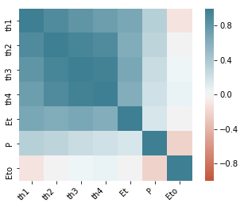
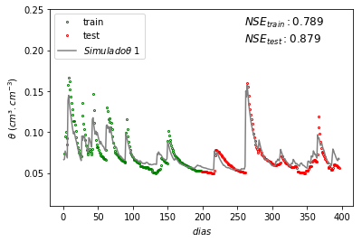
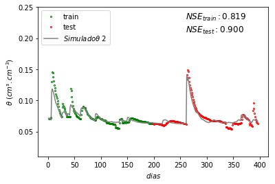
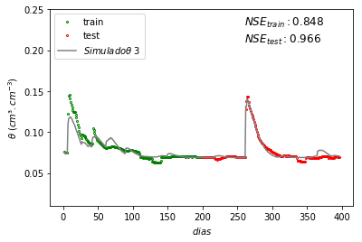
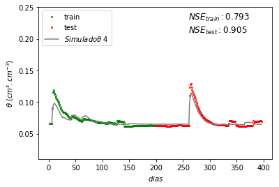

Soil moisture estimator with Machine Learning
Code to estime the Soil Water Content and Actual Evapotranspiration by GaussianProcessRegressor in Caatinga area.
Project maintained by ravellys Hosted on GitHub Pages — Theme by mattgraham
Estimating Soil Moisture and Actual Evapotranspiration with Machine Learning
Routine to estimate the soil water content by GaussianProcessRegressor in a Caatinga area. We trained the model with data of soil moisture, precipitation, and potential evapotranspiration provided by a flux tower installed and controlled by the INCT-ONDACBC (Instituto Nacional de Ciência e Tecnologia - Observatório Nacional da Dinâmica da Água e de Carbono no Bioma Caatinga). This tower is in a seasonal tropical dry forest (Caatinga) in the semi-arid region of Brazil (Serra Talhada - PE). For the simulation, the soil moisture, which was evaluated by TDR sensors for depths of 10, 20, 30, and 40 cm, is used as the initial condition, while precipitation and potential evapotranspiration are boundary conditions. (http://dx.doi.org/10.17190/AMF/1562386).
Localization towers area:

Variables:
- dias = day
- cP = Precipitation
- ETo = potential Evapotranpiration
- ETa = actual Evapotranspiration
- tho = initial soil moisture
- x_ = features
- y_ = Target values
- TH = soil moisture estimated
Initialy, we are import the follows packages:
- import numpy as np
- from matplotlib import pyplot as plt
- import seaborn as sns
- import pandas as pd
- from sklearn.gaussian_process import GaussianProcessRegressor
- from sklearn.gaussian_process.kernels import RBF, WhiteKernel
- from sklearn.model_selection import train_test_split
- import hydroeval as he
Import mensured data
dados_medidos = pd.read_csv("Dados_medidos .csv", header = 0, sep = ";")
dias = dados_medidos["dia"].values[init:]
cP= dados_medidos[cumulated_P].values
ETo = dados_medidos["Eto"].values
Plot of the correlate heatmap meansured data
data = dados_medidos[["th1","th2","th3","th4","Et","P","Eto"]]
corr = data.corr()
ax = sns.heatmap(corr, vmin=-1, vmax=1, center=0, cmap=sns.diverging_palette(20, 220, n=200),square=True)
ax.set_xticklabels(ax.get_xticklabels(), rotation=45,horizontalalignment='right')
plt.show()
Out:
Estimating soil moisture
Initial soil moisture
tho = dados_medidos[["th1","th2","th3","th4"]][init:init+1].values
Create features matrix. Note that features matrix has soil moisture data in time (i-1), and the cP data in time (i)
x_ = dados_medidos[["th1","th2","th3","th4"]][init:-1]
x_[cumulated_P]= dados_medidos[[cumulated_P]][init+1:].values
x_["Eto"]= dados_medidos[["Eto"]][init+1:].values
x_["dia"] = dados_medidos[["dia"]][init+1:].values
x_=np.atleast_2d(x_.values)
Create the Target values with soil moisture data in time (i)
y_ = np.atleast_2d(dados_medidos[["th1","th2","th3","th4"]].values[init+1:])
Instantiate a Gaussian Process model
kernel = 1.0 * RBF([.1,.1,.5,.5,.5,.1],(.1,5)) + WhiteKernel(noise_level=1, noise_level_bounds=(1e-5, 1e-3))
gp = GaussianProcessRegressor(alpha=1e-4, kernel=kernel, n_restarts_optimizer=10, normalize_y=True, optimizer='fmin_l_bfgs_b')
Separete train and test data to input in model
x_train, x_test, y_train, y_test = train_test_split(x_, y_, test_size=0.5, shuffle = False)
Fit to data using Maximum Likelihood Estimation of the parameters
x_train2 = x_train[:,:-1]
gp.fit(x_train2, y_train)
Make the prediction
This loop the values are estimated with the initial moisture with interactive method were Th[i+1] is calculeted with TH[i]
TH = tho.tolist()
for i in range(len(y_)):
TH.append(gp.predict(np.atleast_2d(np.concatenate((TH[i],cP[i+init+1],ETo[i+init+1]), axis=None)))[0])
TH = np.array(TH)
Plot the mensured data and simulated data
for i in range(len(TH[0])):
plt.plot(x_train[:,len(x_test[1,:])-1], y_train[:,i],'o',c = 'green',markersize=2, markerfacecolor="None", label='train')
plt.plot(x_test[:,len(x_test[1,:])-1], y_test[:,i], 'o',c='red',markersize=2, markerfacecolor="None", label='test')
plt.plot(dias, TH[:,i], 'gray', label=r'$Simulado \theta\ %d$'%(i+1))
NSEtest = he.nse(TH[int(x_test[:,len(x_test[1,:])-1][0]-init-1):,i],y_test[:,i])
plt.text(260, .21, r"$NSE_{test}: %.3f $" %NSEtest, fontsize=12)
NSEtrain = he.nse(TH[1:int(x_test[:,len(x_test[1,:])-1][0]-init-1),i],y_train[:,i])
plt.text(260, .23, r"$NSE_{train}: %.3f $" %NSEtrain, fontsize=12)
plt.xlabel('$dias$')
plt.ylabel(r'$ \theta\ (cm³.cm^{-3})$')
plt.ylim(.01, .25)
plt.legend(loc='upper left')
plt.show()
Out:
 
Estimating Actual Evapotranspiration
The ETa is the major water flux in the hydrological cycle and it can be obtained by the Eddy Covariance method (EC). However, this is an expensive method. Therefore, this code shows a new approach to estimate the ETa by Machine Learning. We trained the model with soil moisture, rainfall and potential Evapotranspiration data (calculated by Pean-Monteith).
initial actual evapotranspiration
eta_o = dados_medidos[["Et"]][init:init+1].values
create the Target values with soil moisture data in time (i)
y_eta = np.atleast_2d(dados_medidos[["Et"]].values[init+1:])
separete train and test data to input in model
x_train, x_test, y_train_eta, y_test_eta = train_test_split(x_, y_eta,test_size=0.5,shuffle = False)
x_train2 = x_train[:,:-1]
Instantiate a Gaussian Process and train model
kernel = 1.0 * RBF([.1,.1,.5,.5,.5,.1],(.1,2)) + WhiteKernel(noise_level=1, noise_level_bounds=(1e-5, 1e5))
gp_eta = GaussianProcessRegressor(alpha=1e-6, kernel=kernel, n_restarts_optimizer=10, normalize_y=True,optimizer='fmin_l_bfgs_b')
gp_eta.fit(x_train2, y_train_eta)
Make the prediction
ETa = eta_o.tolist()[0]
for i in range(len(y_)):
ETa.append(gp_eta.predict(np.atleast_2d((np.concatenate((TH[i],[cP[i+1]],[ETo[i+1]])))))[0,0])
ETa= np.array(ETa)
Plot
plt.plot(x_train[:,len(x_test[1,:])-1], y_train_eta,'o',c = 'green',markersize=2, markerfacecolor="None", label='train')
plt.plot(x_test[:,len(x_test[1,:])-1], y_test_eta, 'o',c='red',markersize=2, markerfacecolor="None", label='test')
plt.plot(dias, ETa, 'gray', label=r'$ ETa simulado$')
NSEtest = he.nse(ETa[int(x_test[:,len(x_test[1,:])-1][0]-init-1):],y_test_eta[:,0])
plt.text(270, .5, r"$NSE_{test}: %.3f $" %NSEtest, fontsize=12)
NSEtrain = he.nse(ETa[1:int(x_test[:,len(x_test[1,:])-1][0]-init-1)],y_train_eta[:,0])
plt.text(270, .55, r"$NSE_{train}: %.3f $" %NSEtrain, fontsize=12)
plt.xlabel('$dias$')
plt.ylabel(r'$ ETa (cm.d^{-1})$')
plt.ylim(.0, .6)
plt.legend(loc='upper left')
plt.show()